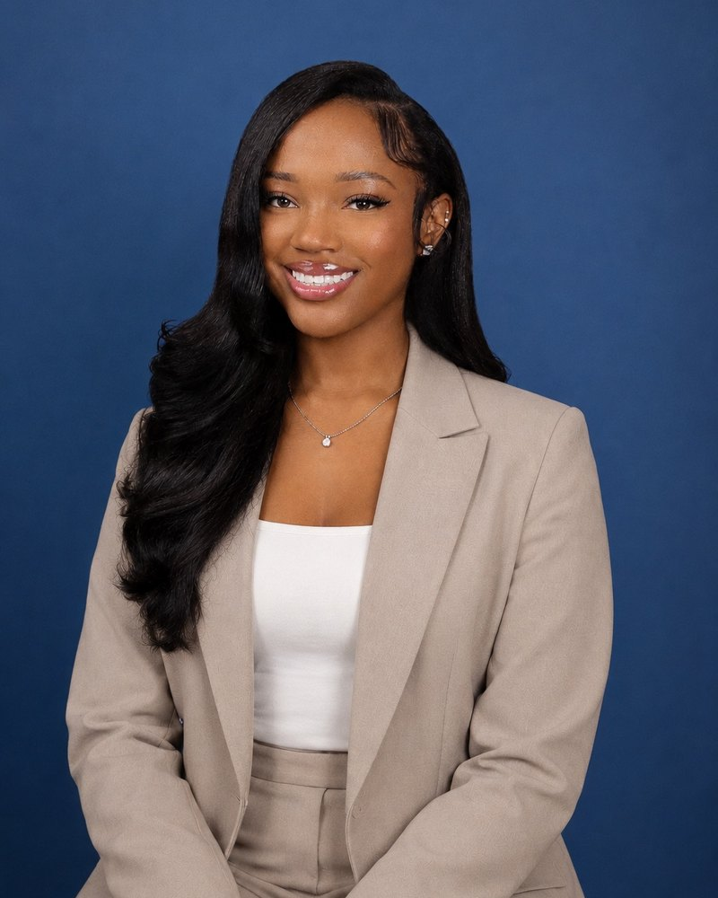

01
Maintenance spend analysis
Analyzed 40,000+ maintenance work orders, classifying free-text records in Python to quantify $4.2M in oil-related maintenance spend for leadership.
PG&E · 2026
I turn messy operational data into clear reporting and practical tools, with a business background that keeps the work focused on the decision behind it.

I started in business, earning a B.S. in Business Administration from San Francisco State, then built the math and statistics to go with it: an Associate in Mathematics from Laney College and an M.A. in Statistics and Data Science at UC Berkeley, finishing December 2026.
At PG&E I work on substation operations data. I reconciled our SF6 gas sampling cylinder inventory with 8 teams and the chemistry lab, rebuilt the dataset behind a new utilization KPI, sized $4.2M in maintenance spend, and quantified a repair-kit gap for budget planning. Before that I coached 140 students a term at Laney College, using progress data to target support, analyzed asset data at Berkeley Lab's NERSC, and did biostatistics research at NYU.
The part I care about most is the stretch between raw data and a decision: getting the data right, making the analysis easy to follow, and building tools people keep using after I hand them off.
Analyzed 40,000+ maintenance work orders, classifying free-text records in Python to quantify $4.2M in oil-related maintenance spend for leadership.
Quantified a 503-unit (26%) repair-kit coverage gap across a 1,936-unit fleet to inform budget planning, and presented the findings to leadership.
Merged 26 weekly inventory reports into a clean historical dataset, enabling a new Power BI utilization KPI and supply vs. demand view. Reconciled 295 SF6 gas sampling cylinders ($1K each) with 8 teams and the chemistry lab, cutting unaccounted-for units from 45 to 25 (up to $20K saved).
Built and compared six regression models on 5,000+ products to find what drives price. Active ingredients carried the largest premiums (retinol +42%), and Sephora exclusives were priced 18% lower.
Built encoding models that predict fMRI activity from podcast transcripts, aligning about 25 GB of text and fMRI data per subject on HPC clusters. Led the SHAP and LIME analysis showing dialogue words like "said" drove predicted activity.
Compared three classifiers to predict rare outcomes (under 2% of cases) across 43,000+ records, and identified a 14-percentage-point racial gap in CT imaging that persisted after controlling for clinical severity.
Classified satellite pixels as cloud or ice with gradient boosting and autoencoder features (ROC-AUC 0.94–0.996 on unseen images). Led the exploratory analysis and engineered the NDAI × SD feature, the strongest single predictor.
Regression analysis of CDC Chronic Disease Indicators: each 1-point rise in state poverty prevalence was associated with a 0.33-point rise in diabetes prevalence (p < 0.001), with choropleth maps of both.
PG&E projects are summarized at a high level to respect confidentiality; no work data or code is shared. More on GitHub.